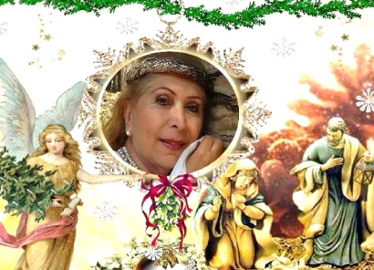
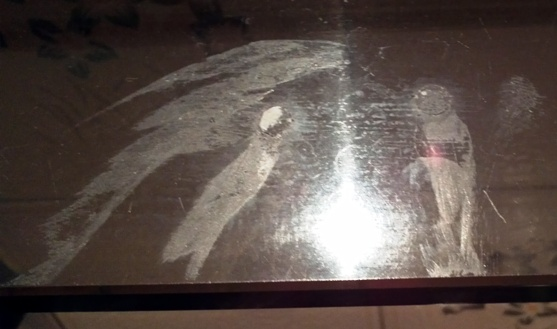
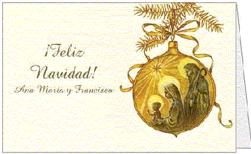
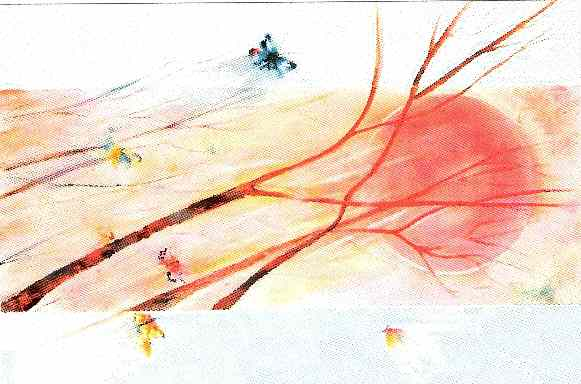
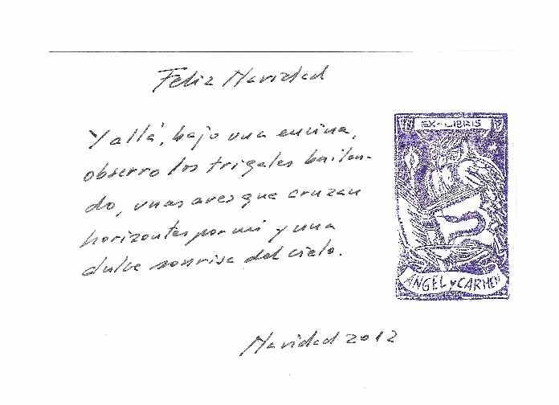
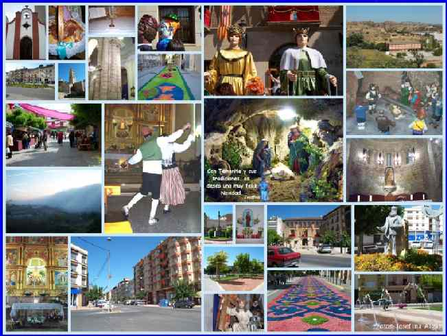
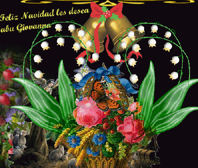
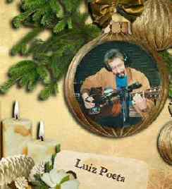
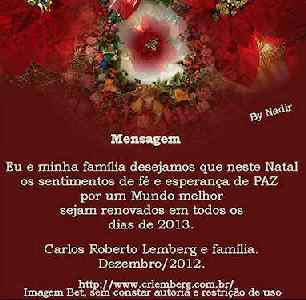

FIESTAS DE FIN DE AÑO 2013
Las manos de Dios
 |
¡Oh manos! Hay manos, las manos de Dios, Autor: Lucía De García |
Para esta Navidad, Maria Yolanda Veliz , Tucumán, Argentina... comparte una 
<centrologoterapiatuc@gmail.com>
|
Feliz Navidad, por Alejandro Sanz Goena (España)
La luz no aparece, siempre está. El amor no se esconde, vive permanentemente en cada rincón del Universo. Los mensajes de los Seres de Luz
se transforman en breves pensamientos de comunicación. Y la energía que fluye por cada acantilado de la vida navega por el mar de las conciencias humanas y
vuelve benevolente a su manantial sagrado. Larga es la vida, pero más largo es el camino de la Creación, pues en la Nada ya existía la inacción, la no Existencia,
dando reconocimiento a la Inmortalidad, el camino largo sin retorno a la sed de la Consciencia.FELIZ NAVIDAD
The light does not appear, always is. Love is not hidden, living permanently in every corner of the universe. Posts by the beings of light are transformed into
brief thoughts of communication. And the energy flowing through each cliff of life navigating the sea of human consciences and benevolent returns to its sacred source.
Life is long, but the longer the path of creation, as in nothing already existed inaction, non-existence, giving recognition to immortality, the long road
without return to the thirst of the consciousness. MERRY CRISTMAS
Navidad y Fin de año 2012-2013
 http://www.zacagnino.com/natal.htm |
DESEO NAVIDEÑO DE MARY ACOSTA / ARGÜESO - ( BS. AS. - ARGENTINA)
CADA AMIGO/A ES UNA LUZ EN MI CAMINO
Y TU SABES QUE ERES MI MEJOR REGALO!
FELICIDADES!!!!
AMIGOS MUY QUERIDOS TODOS:
QUE LA BRISA DE LOS SUEÑOS REFRESQUE EN CONTINUADO LA EFECTIVIZACION DE SUS ANHELADOS PROYECTOS PARA EL PROXIMO AÑO 2013 Y LA VIDA LES SONRÍA EN EL "PARA SIEMPRE" CON PAZ Y PROSPERIDAD SOBRE EL HORIZONTE MARAVILLOSO DEL AMOR. FELICES FIESTAS!!!!
MARY ACOSTA/ ARGÜESO
|
|
 |
 Conmemoración de Navidad de Angel Sanz Goena y Carmen Berges (España) |
 Con Tamarite y sus tradiciones, os deseo una muy feliz Navida. Josefina Algar (España) |
 |
|
http://elrincondemily.webcindario.com/ |
SALUDO HUMANISTA.
Paz, Fuerza y Alegría. Lo entiendo así: Paz: Calma atenta; sin depresión. Fuerza: Potencia clara; sin forzamiento. Alegría: Satisfacción interna; sin euforia. Que así sea nuestro día a día. Paz, Fuerza y Alegría. de Carlos Quaglia ( Argentino radicado en Brasil) |
PESSOA… Desejo, do fundo do meu coração, que Deus abençoe ricamente a sua vida e que o dia de Natal celebre, verdadeiramente, o dia do nascimento de Jesus, trazendo-lhe um novo tempo de paz, saúde, alegria, compreensão, sabedoria, energia e muitas realizações pessoais. FELIZ NATAL ! Luiz Poeta, Denise, Michelle, Louise, Luizinho e Dudinha Não esqueça de abrir o anexo feito com tanto carinho pela minha maninha Magda Gomes . Agradeço, também, de coração, o carinho desta imagem que a Rebeca Mattar carinhosamente preparou para você.
 |
 |
. . .
La Última Navidad
Lima 1949. Son las seis y treinta de la mañana del
24 de diciembre. Como ha venido ocurriendo en las últimas semanas Juanita
Criado,
con delicadeza, con discreción, corre ligeramente la cortina de tela
floreada que cubre la ventana de madera de su modesto departamento
ubicado en el segundo piso de la calle Pampa de Lara y con aprehensión
atisba hacia la calle. Lentamente gira su cabeza para mirar a ambos
lados de la calle. En su pequeño rostro se esboza una tenue y triste
sonrisa al toparse con el escenario cotidiano de los días previos a la
navidad:
Tiendas y bazares lucen adornadas con guirnaldas salpicadas de nieve mientras
las panaderías promocionan panetones, bizcochos y chocolates
para la nochebuena. Pese a la temprana hora cada establecimiento luce coloridas
e intermitentes luces en el frontis de sus vitrinas tratando
de llamar la atención de los adormilados transeúntes. Por la esquina
ve asomar a los sedientos bohemios de siempre que dirigen sus
tambaleantes pasos hacia la cantina del chino donde terminarán de fermentar
aflicciones o alegrías.
Con una de sus manos Juanita acomoda el rebelde mechón
que se empecina a deslizarse por su pequeña frente y, como siempre, termina
por abrir la ventana y asomar medio cuerpo hacia la calle, luego achina sus
ojos para escudriñar las inclinadas y congestionadas calles
de los Barrios Altos: frente a su casa, sudorosos trabajadores del Comedor Popular
descargan de un desvencijado camión los víveres que se
utilizarán para agasajar a los niños, ancianos e indigentes del
viejo barrio limeño; hacia su derecha observa a presurosas señoras
que se
dirigen a comprar ropa y juguetes para sus vástagos e inevitablemente
inclina la cabeza y un prolongado suspiro hace estremecer
su frágil figura. Luego mira hacia el cuarto donde aún duermen
sus tres pequeños hijos y el recuerdo de la ausencia de su amado
esposo en las dos últimas navidades termina por entristecer su rostro
y en ese momento le resulta difícil disimular. Pero cuando un
sollozo intenta llevarla al llanto se serena y con uno de sus dedos atrapa una
lágrima que empezaba a deslizarse por su rostro.
.
De pronto el sonido de una bocina de mano la devuelve a la realidad. Es Carlos
el panadero que le pregunta si desea pan; si, claro,
responde; pero no ha bajado su canastilla, le dice el muchacho; cierto me distraje,
se disculpa. Cuando recoge la canastilla, junto al pan
encuentra una nota: “Acabo de ver a su esposo entrando a una casona cerca
al Mercado Central”. Apenas terminó de leer la nota,
Juanita rompió el papel y lo arrojó al fuego. Luego se dirigió
al cuarto donde dormían sus tres pequeños hijos y con amorosa
delicadeza
fue despertando primero a Luis, luego a Magdalena y finalmente a Manuel. Mientras
los vestía con su mejor ropa y besaba la frente de
cada uno les dijo con voz susurrante: Vamos hijos levántense, hoy vamos
a ver a papá.
Juana Criado era sin duda el complemento ideal para Luis
Negreiros Vega. De figura menuda, cabellos negros y modales pausados,
desde un primer momento supo que las actividades políticas y sindicales
de su esposo lo mantendrían alejado de su hogar y ella así lo
aceptó.
Sabía que ese sacrificio también involucraría a sus hijos
ya que solo podrían verlo por escasos momentos y en pocas oportunidades.
Sin embargo jamás imaginó que por causa del golpe militar de Odría
su esposo llegaría a ocupar simultáneamente las secretarías
generales
del Partido Aprista y de la Confederación de Trabajadores del Perú,
lo que provocó su clandestinidad debido a que había orden de asesinarlo.
Por eso cuando recibía las cartas de su esposo las guardaba para leerlas
a sus hijos. Orgullosa les contaba que su padre estaba realizando
importantes tareas para cambiar la situación de los pobres del Perú
y por eso sus ausencias. Ganada por su subconsciente les decía que la
misión que en ese momento desarrollaba su padre era el último
encargo y que en cuanto la culmine estaría con ellos. Y esta vez para
siempre.
Cuando terminó de peinar a sus niños, tomó
una canasta y se dirigió al mercado. Sabía que la estaban vigilando
y que debía evitarlos
si deseaba encontrarse con su esposo. Como de costumbre, se dirigió donde
Samuel, cuyo puesto de frutas ubicado en la entrada del
mercado le permitía observar la calle con facilidad. Al desgaire tomó
unas mandarinas y miró al vendedor ¿qué me recomienda?
le preguntó. Piña caserita, piña, le dijo mientras tomaba
el leñoso fruto en sus manos: era señal de peligro.
Sin demostrar nerviosismo avanzó hacía la tienda de abarrotes
de la señora Sonia quién al verla llegar le sonrió y le
recomendó
que comprara pescado, “están frescos” le aseguró.
Juana Negreiros sonrió. Seguro que hay noticias recientes se dijo y sin
pensarlo
dos veces fue en busca de doña Esperanza. Cuando llegó, la robusta
morena estaba terminando de filetear un pescado que luego
entregó a una pareja de desconocidos que fingiendo conversar demoraban
en abandonar el puesto. Los miró de soslayo y notó que
el hombre lucía el cabello corto. Sin perder la naturalidad le habló
a doña Esperanza: Por favor ayúdeme a escoger el menú,
hoy
tenemos un invitado especial ¿qué me sugiere? No se preocupe doña
Juanita, todo en la vida tiene solución, le respondió la morena
dibujando una enorme sonrisa en su rostro. Cocine lo que cocine solo tiene que
mantener La Confianza. No lo olvide caserita:
La Confianza. El énfasis que la pescadora puso en las últimas
palabras hizo que Juana Criado captara el mensaje de inmediato:
está en el solar La confianza. Gracias, ahorita regreso, le respondió.
Entonces tomó las manitas de sus hijos y decidida salió del mercado.
En medio de la convulsión social y el ambiente hostil
en que vivían los peruanos en general y su familia en particular, el
calor del
humilde hogar Negreiros-Criado era avivado diariamente por doña Juanita,
como cariñosamente la llamaban sus vecinos.
Ella esbozando una permanente actitud serena en su rostro, iba delineando el
universo cotidiano de sus pequeños vástagos.
Sin embargo nadie sabía que muchas madrugadas la sorprendieron enjugando
lágrimas al no tener noticias de él. Aún cuando
estaba convencida que más allá de esas paredes, palpitaban los
sentimientos hacia ellos de su amado esposo, la suma de una
serie de acontecimientos ocurridos en los últimos meses le hacían
presagiar momentos oscuros próximos. Más aún, después
de
la visita que le hiciera un funcionario de la embajada de Bolivia, sus temores
se acrecentaron. Mientras sus menudos pasos y los
jaloneos de su hija la llevaban al esperado encuentro, de a pocos el desasosiego
iba revistiendo su frágil figura. Absorta, sumida en
sus pensamientos, su rostro intentó dibujar una leve sonrisa para no
alarmar a sus hijos pero sus ojos delataban su tristeza.
Con cada paso asomaba un recuerdo. Con cada recuerdo un estremecimiento, un
estrujo en su alma.
Y es que en medio de aquella vorágine político
familiar Juana Criado era consciente de que el Apra atravesaba por uno de los
momentos
más difíciles de su historia y que su esposo tenía una
misión que cumplir. Pero también era consciente que sus hijos
no lo entendían así.
Que no tenían porque entenderlo así. Sobre todo Magdalena, aquella
niña menudita piel color capulí rostro sonriente
pero de carácter indomable.
-Mamá ya llegamos al solar La Confianza. Ten cuidado al bajar; la voz de su hija la sustrajo de sus cavileos.
Cuando cruzaron la puerta, vigilante, agazapado bajo la
escalera, encontraron a Julio Villavicencio quien al ver
a la esposa de su jefe le pidió permiso para avisarle de su llegada.
-Disculpe usted la interrupción compañero Lucho... tiene visita, le avisó.
-¿Qué sucede? le dije que no abandonara el
auto ni deje de mirar quienes rondan por la calle. Sabe mejor que nadie que
los soplones están por todos lados…
Cuando Villavicencio se apartó de la puerta, súbitamente el recio
rostro del líder sindical cambió de expresión.
Dos niños que corren incontrolables dejando desasidas
las manos maternas y se dirigen ansiosos, codiciosos, hacia su sorprendido
padre que los espera con los brazos extendidos; el silencio de los adultos que
es interrumpido por la sorpresiva visita y por espontáneas
vivaces cálidas voces infantiles; madre e hija que tomadas de la mano
permanecen detenidas como el tiempo bajo el dintel; cuatro
rostros masculinos que adoptando gestos indefinibles en sus curtidos rostros
contemplan sorprendidos conmovidos la tierna escena;
el líder sindical que abandona su ruda postura de secretario general
del Apra y de la Confederación de Trabajadores del Perú y muestra
al hombre, al padre, tan diferente, paradójicamente flexible, tierno,
amoroso; cuatro voces graves pero respetuosas que al unísono
piden permiso para salir a almorzar; pasos que abandonan discretamente el cuarto
y se pierden en el tumulto callejero; dejando en
el cuarto, miradas femeninas que se entrecruzan; silencios que anuncian tempestades:
-Juani, Mayita, vengan por favor, siéntense aquí
junto a Luchito y Manolito, les invita a ingresar y se levanta para abrazar
y besar la
mejilla de su esposa. Luego con delicadeza toma de la cintura a su grácil
hija y la sienta sobre su rodilla, acomoda su vestido
blanco y el listón que lleva en su cabello: a ver un besito para papá,
le pide.
Y en medio de aquel oscuro y silencioso cuarto dos pequeños brazos empiezan
a alzar vuelo como palomas níveas para terminar
posándose sobre los anchos hombros del trejo sindicalista pomabambino
que cae rendido a las caricias de su adorada hija.
Luego todos se confunden en un abrazo que los estremece: entonces desbordan
los sentimientos guardados, las querencias genuinas,
las caricias y abrazos acumulados que compactan sus cuerpos que temen, que no
desean, separarse y que expresan cinco anhelos
de detener el tiempo.
De pronto una pregunta que asoma.
-Papi, que sucede que no te acuerdas de nosotros, ya no nos visitas como antes; la voz tierna y a la vez firme de Magdalena.
-Que cosas dices hijita. Claro que siempre me acuerdo de
ustedes. A ver dime como te va en el colegio, le pregunta intentando ser
elusivo a la intención de la pregunta.
-Lucho, interrumpe Juana.
-Dime Juanita...
-Por favor escúchanos. Ayer otra vez estuvieron en
casa los funcionarios de la embajada de Bolivia. Están muy preocupados
por tu
situación y me preguntaron sobre tu decisión. Nosotros, conoces
de sobra de nuestro deseo, desde hace una semana tenemos tus maletas
listas para que asiles o te exilies. Ellos nos van a ayudar en lo posible. Ahora
todo depende de ti. Solo te pido que recuerdes que cada día
que pasa es peligroso para ti y angustioso para nosotros. ¿Por qué
no lo entiendes así? ¿Qué te resulta tan difícil?
Todos saben que te has
convertido en el hombre más temible para la dictadura y que la orden
del gobierno es capturarte vivo o muerto.
Por unos segundos los ojos pardos de Negreiros titilaron
nerviosos debajo de su espaciosa frente, pero al instante su prominente barbilla
retomó su corte agresivo.
-Es mejor que dejemos esta conversación para otra
oportunidad Juana. Ten en cuenta que están presentes los chicos y no
creo
conveniente que...
-No. Esta es la última oportunidad y es conveniente que ellos sepan de tu decisión, lo interrumpió.
-¿Papá tú quieres a tus hijos? otra vez Magdalena, preguntando.
-Claro hijita, que pregunta me haces...
-Entonces si de veras nos quieres, tu primer compromiso
debería ser con nosotros, tus hijos. Nosotros sí te queremos por
eso nos
preocupamos por tu vida y lo que pueda pasarte. Además hace dos años
que pasamos la navidad juntos y esta noche deseamos
estar a tu lado, por favor…
Otra vez un silencio incómodo se posesionó
de la sala. De pronto tres golpes en la puerta lo sacó del marasmo. Otra
vez Villavicencio:
Don Lucho, hay un patrullero rondando, es mejor salir…Además no
olvide que hay reuniones pendientes. Tengo el auto en la puerta.
-No, Julio. Acabo de cancelar todas las actividades de hoy.
He decidido pasar esta navidad con mi familia. Te recomiendo que hagas
lo mismo. Quizás sea nuestra última navidad.
Esa navidad fue inolvidable para la familia Negreiros Criado.
Inolvidable e irrepetible. Tres meses después, Luis Negreiros fue
cruelmente asesinado.
(Extracto de la novela “Luis Negreiros Vega, Historia No Oficial” de próxima aparición).
José Octavio Huachani Sánchez
Periodista y escritor peruano.
Navidad Llegó la navidad, llega mi pena el corazón se estruja en el silencio sólo escucho a lo lejos los sonidos de esa vida mundana, que es ajena. Recuerdo cuando yo también reía y colmada de regalos aún creía en la palabra fútil del hermano y en el deseo hueco que escondía. No se ven almas, sólo caras; sonrisas que son trampas del destino para probar cuán lejos hoy estamos de aquél, nuestro único camino. Ríe mientras puedas pues es corta la vida en las tinieblas de la esencia, el alma busca la límpida presencia del destino final que hoy ya se acorta. Autor: Tesy Cariaga website: http://www.ladytessdesign.com.ar |
CUENTOS PARA RESURGIR EN NAVIDAD… EN LA MISMA SINTONIA Hagamos una gran feria y pongamos en ella nuestros
deseos… Autor: Ester Faride Matar |
La noche de Navidad |
Feliz navidad os deseo con todo mi cariño y afecto a todos
los visitantes de la web vida-reflexion. Antonio Manoel Abreu Sardenberg São Fidélis "Cidade Poema"
Meu coração está triste Tudo de bom Deus me deu,
Se Meu Natal hoje é triste ,
E, por isso, Bom Jesus, Todos os direitos reservados ao autor |
UNA NAVIDAD
DISTINTA.
Esta Navidad va a ser llena de nostalgia, me daré cuenta que sobran platos en mi mesa.
Aun así, trataré de vivirla con alegría, porque tengo una hermosa familia que Dios me regaló, que me da ánimos, fuerzas para seguir viviendo.
Ésta será quizás. la más triste de mi vida, porque hay varios seres queridos que no están a mi lado; pero, sus lugares siguen sin ser ocupados.
Eran épocas muy lindas, la Navidad la vivía, la amaba era muy hermosa para mí. que estábamos todos juntos, esperando las 12 para brindar.
Me gustaría cocinarles los mejores manjares, aún estando cansada por el trabajo del día. Poner mi mejor mantel, mis mejores copas, mis mejores regalos, mi mayor alegría.
Recuerdas amor?---cuando nuestras hijas armaban el arbolito, cuanta alegría. qué poner primero...
Me puse a recordar y mis lágrimas empañaron mis ojos, tanto que pensé….que ésta sería
mi más triste Navidad… quiero brindar para que Dios esté en los corazones de cada uno, y los recuerdos de ayer no empañen
la felicidad que fuera nuestra.
Autor: Elsa Patterer |
MUJER: FELIZ NAVIDAD!!
del amor y la felicidad.
Ser Luminoso.
atavismo que me envuelve luminosamente.
amor y la felicidad:
Autor: Carlos Quaglia |
. . .
Compartamos el pan.
Estaba pensando qué decirte, qué desearte en estos días
en que las vidrieras y las góndolas se cargan de cosas que para vos son
inalcanzables.
Te veo con ojos de asombro y almita resignada al no llegar a tanta oferta que
ofrece este mundo desigual.
Todo está adornado de luces y brillos, entre tanta sombra…
Sigo sin saber qué hacer; qué poner en este simple pensamiento
que pienso hacerte llegar, al menos, tratando de contarte mi desolación
ante tanta indiferencia.
Existe una realidad, mí querido hermano, que ojalá puedas comprenderla
dentro de tu insistentemente y justa pregunta:
¿Por qué?
Desde tiempos inmemoriales, los que pueden comprar han sido siempre unos pocos
si los comparamos con la cantidad enorme que no puede
hacerlo. Y eso marca la diferencia que denominan ricos y pobres. Entendámonos:
hablo de dinero, de tener dinero, lo que no significa que
sean mejores personas, mejores seres humanos, que es en definitiva lo que debemos
ser.
Sí, me imagino que igual no te conforma, si ves gente cargada de regalos
y alimentos caros y tu pregunta sigue sin respuesta.
Desde hace siglos, la comunidad cristiana, denominada así por ser seguidores
de Cristo, celebra la navidad o natividad, que viene a ser el
nacimiento de Jesús, ese niño que nace pobre, en un pesebre, que
es un lugar donde estaban los animales. Ese niño crece y se ocupa de
los más vulnerables, los que también estaban fuera de toda posibilidad
de estar mejor. Su vida se caracterizó por servir a los demás,
su lucha era por un
mundo de iguales, por eso sufrió terribles persecuciones, tentaciones
desde el poder, es decir era un hombre como vos y yo, hasta que un día
el gran poder lo mata, pensando que terminaba con un tipo que estaba siendo
peligroso, considerando que gran parte del pueblo
desamparado encontraba en Él, una salvación en la esperanza y
la fe. Este hombre que muere en una cruz ( la forma más humillante
para la época) torturado y desangrado, sin oponer resistencia alguna.
Su muerte fue una entrega fundada en su prédica y creencia de ser
un salvador para TODOS.
Me preguntarás: ¿para qué tanta palabra si todos los años
cada vez son menos los que festejan ese nacimiento de Jesús que te cuento?
Si entendemos que Jesús hombre entró a la vida por los que menos
tenían, es muy cierto que la celebración de su nacimiento , es
decir
la navidad, debería sentirse como un acto de cambio; un comienzo de nuevos
tiempos, pero no siempre es así, no siempre se hace lo que
Jesús representa.
Lo que te quiero trasmitir es simple, aunque parezca un consuelo para que te
quites la angustia por no poder llenar la mesa de
costosas comidas. Todos los creyentes somos Jesús, y como tales somos
hermanos, por lo que deberíamos parecernos en las acciones
que Él nos encomendó que realizáramos.
Celebrar la Navidad es sinónimo de austeridad, de alegría por
sabernos dispuestos a una nueva entrega por un mundo de iguales.
Mi querido hermano, permíteme que
compartamos tan sólo la belleza de un pan y la humildad que existe en
nuestro corazón lleno de gozo,
ante la fiesta de encontrar el camino de la esperanza compartida.
¡¡Mi afecto por siempre!!
Miguel Longarini
Libre pensador y Poeta Argentino
9 de Julio- Pcia de Bs .As
http:// www.apurocorazon.blog.com.es
. . .
Se termina el año y es el momento de desearte que el nuevo año sea muy Feliz
y se cumplan todos tus deseos.
Es también el tiempo de la Navidad y de las correspondientes
tarjetas y saludos y los maravillosos regalos que nos trae Papa Noel
en su trineo.
Es también el momento para reflexionar.
¿Qué celebramos en Navidad?
Celebramos un aniversario más del nacimiento de Jesús,
el hijo de María y José. Un humilde matrimonio nazareno, que en
una noche
como la que nosotros celebramos, ellos celebraron el nacimiento de su hijo.
Justamente en ese nacimiento es sobre lo que debemos reflexionar.
Celebramos el nacimiento de un hombre que cambio las condiciones de vida en el mundo.
Un hombre que nos vino a enseñar que somos iguales y que el amor es lo único que permite construir la vida humana.
Un hombre que para muchos –yo entre ellos- fundo una fe religiosa que ayuda a salvar al hombre infinito, esto es su alma.
Un hombre, que para otros fue un líder social y político
–pensamiento que también comparto- que marco la ruta para que
la comunidad humana construya una nueva sociedad donde la justicia y el amor
sean sus centros de conducción.
Un hombre que nos enseño que son “…dichosos los que tienen hambre y sed de justicia”
Un hombre que trabajo incansablemente por los marginados
–llámense leprosos o pecadores- para que recuperaran su papel
protagónico en la sociedad en la cual vivían, Entonces así
nos enseño por lo que tenemos que luchar nosotros.
Celebramos esa noche el nacimiento de un hombre que fue
capaz de sostener sus ideales, ejemplificar con su acción y
morir ajusticiado en una cruz para mostrarnos el camino correcto que debemos
transitar.
¿Recordaremos eso, esta Nochebuena?
Justamente te escribo para que sea eso lo que alumbre tu
pensamiento, que recuerdes con toda tu alegría el nacimiento de quien
fue capaz de dar su vida por ti, por mí, por todos.
Que jamás ostentó el poder, que jamás aprovechó
de su situación de líder, que nunca ocultó quién
era, lo que pensaba y lo que quería
conseguir para toda la sociedad.
Por eso mi deseo es que esta Nochebuena te sientes a compartir
un vaso de vino con esta reflexión, para que tengas seguridad de que
estás celebrando a quien te mostró el camino que hay que seguir
para bien de todos los que componemos la humanidad, y seguirlo
siempre, sin olvidar a quien lo trazó.
Con todo mi cariño, Federico E. Cavada Kuhlmann
. . .
CAMANCHACA (Cuento de Navidad)
Iván Aarón-----------------------------------
Pampa Nortina inmensa.
Atardece en la víspera de la Navidad de 1977.
En Valparaíso y en Viña, como en tantas otras ciudades, los atrasados
de siempre recorren tiendas
y jugueterías.
Nuestro vehículo, solitario en la carretera, nunca alcanza esa pequeña
laguna de mentira que los rayos del sol forman allá adelante
. Sobre el vidrio se ven reflejados los rostros de nuestros hijos, que miran
los paisajes que ellos tanto aman, por haber nacido allá.
Otros niños como ellos, a esa hora, contemplan las vitrinas que muestran
todos esos sueños que, a medianoche, el Viejito Pascuero hará
realidad.
Mientras estos chiquillos acompañan a sus padres a saludar los soldados
que cubren solitaria guarnición, otros niños esperan
en sus hogares que mañana les lleguen bizarros soldados que, vistiendo
uniformes de oro y de plata, compartirán sus juegos.
Anochece.
Las bocinas y los frenazos; la congestión en las ciudades; los ponches
que se cuelan en los campos; las devotas que adornan
primorosos altares para la Misa del Gallo.
Llegamos a la barrera.
Ahí está, estoica como siempre, la presencia de nuestros Centinelas
del Norte. Serenos, atentos a todo en medio de la nada.
Las miradas infantiles no se asombran ante el armamento, que es de verdad, ni
se maravillan de los uniformes que confunden sus colore
s con los alrededores, pues han crecido entre soldados.
Rancho de Cuartel, espartano como todo lo militar. La charla ágil, las
risas sonoras.
— Total no seremos nosotros los que estemos aquí para el Año
Nuevo.
— Claro. La Navidad es para los niños.
Se hacen los relevos; todos tienen oportunidad de compartir con el superior,
que es también el instructor y el amigo.
Nos vamos, aún quedan deberes por cumplir en la Guarnición.
— Que lo pasen bien.
— Que vuelvan sin novedad.
¿En qué otros lugares estará sucediendo lo mismo, ya sea
en tierras australes, en valles o cordilleras?
De vuelta a la barrera.
Bajamos a despedirnos de los centinelas. Un sincero apretón de manos,
un abrazo y un “Feliz Navidad” de un viejo soldado
a cada joven soldado.
Nuestros hijos son levantados en brazos por los centinelas, que los estrechan
contra sus rostros curtidos por mil vientos.
— Vamos, se hace tarde.
Y ya en el vehículo de nuevo el niño que comenta con su hermano:
— Los soldados tenían la cara mojada.
Y su hermano, algo mayor, que contesta:
— Claro. A esta hora ya empieza a entrar la camanchaca(1).
(1)La Camanchaca es un tipo
de neblina costera, dinámica y muy copiosa. Se trata de condensación
en altura que se mueve hacia zonas costeras por el viento y
se produce gracias al anticiclón del Pacífico.
Tomadas fuertes las fraternales manos, borremos rencores y cualquier mezquindad, que es placentero llamarnos hermanos, aprendamos del niño y su de su infinita bondad.
Personas inseparables que la red siempre están, personas lejanas llamadas hermanas de mucha generosidad, reciban fuerte mi cordial abrazo, y siguiendo este lazo de profunda amistad, amigas queridas, las colme mi niño de felicidad, y en familia pasen Feliz Nochebuena y una gran Navidad.
©María Cristina Garay© Monte Grande - Buenos Aires Argentina
23 de Diciembre de 2007 |
|
FELIZ NAVIDAD
Llega mi niño como todos los años y una vez mas bendecirá a su amado rebaño, instalando en los corazones nobles razones, en el preclaro mensaje de amor y de paz.
Llega como siempre con inmensa alegría, y con total algarabía te recibirán, en la noche de Nochebuena, mientras las campanas resuenan, anunciando gloriosas tu eterna natividad. Que al mundo lo cambies, que sea sereno, que el hombre se aleje definitivo de la maldad, que recapacite y se esmere para ser mas bueno, que se es mas feliz viviendo con humanidad. |
MENSAGEM
DE NATAL, PÓS-INTERNET
Ógui Lourenço Mauri
Ah, que delícia o Natal pós-Internet!
Funde o virtual ao real, pura sinergia...
O computador trouxe mais alegria,
Cada novo ano mais gente se intromete...
Abraços amigos, de longe e de perto;
Uma obra das Alturas, que já deu certo,
Volta do Menino-Deus que se repete.
A amizade inserta no mundo virtual
Provoca à da "realidade" sua expansão,
Tendo à frente os ditames do coração,
Nossa antena do foro sentimental...
Foi a rede universal forte instrumento
Que incutiu no homem um novo sentimento,
Bem mais fraterno à chegada do Natal.
Meu amigo ou amiga que, a cada dia,
Eu sei que não fica sem mandar mensagem,
Aceita esta minha singela homenagem,
Pois ser teu destinatário é regalia...
Um Feliz Natal!... E Próspero Ano Novo!
Que, pra seguir o velho chavão do povo,
"Seja pleno de paz, amor e alegria".
Ógui Lourenço Mauri
Acadêmico Fundador nº 27
. . .
Año Nuevo, Vida Nueva
Aunque las decepciones marcaron su vida, nunca le cerró las puertas al
amor.
Pero tampoco estaba expuesto a otro engaño, a una nueva frustración.
Por eso, tratando de encontrar un refugio propio, buscó un lugar que
lo distanciara de aquella su ciudad que a veces se le mostraba tan
fraterna como impía, tan mística como transgresora. Aunque, hay
que decirlo, a esa altura de su vida aquellos usos o costumbres ya poco
o nada le importaban.
A él solo le interesaba que respetaran sus espacios y su albedrío
para elegir o desechar. Entonces decidió salir en busca de lo que sería
su paraíso personal, de ese lugar donde sentirse genuino, libre. Y escogió
la víspera de año nuevo para hacerlo. Ese día como nunca
sintió
el frío de la soledad. Además sabía que por los ajetreos
propios de la fecha nadie notaría su ausencia. Muy temprano abandonó
su casa sin
avisar a nadie. Sólo llevaba su vieja guitarra, una mochila con sus libros
y otra que contenía algunos bártulos personales.
Iba en busca de su imaginado paraíso sin importarle donde estuviera ubicado.
Luego de viajar por muchas comunidades
(nunca contó los días, no tendría sentido, decía),
divisó a lo lejos el lugar perfecto.
Era un pequeño villorrio situado en una inhóspita zona rural.
Y en aquel valle lejano, escondido; debajo de una colina y arriba de un
arroyuelo, empezó a construir no sólo su cabaña, sino también
su mundo.
Una villa donde no existiera destino, normas, ni leyes. Un paraje exento de
tristezas, temores o envidias.
Un lugar donde el tiempo viviera aprisionado. Donde hubiera noches de plenilunio
interminables y eternas y florecientes primaveras.
Un sitio donde nada estuviera prohibido, donde incluso, no llegara el mandato
de Dios. Apenas terminó de construir su casa, empezó
la tarea de labrar la tierra y, quitando abrojos y espinas sembró plantas
y rosedales que cada mañana cuidaba con amoroso afán.
A mediodía preparaba su comida y las tardes las usaba para leer. Culminaba
la noche rasgueando su gastada guitarra.
Sin embargo conforme fue pasando el tiempo, los días y las noches se
tornaron vacías y heladas.
Y fue en la víspera de otro año nuevo cuando sintió otra
vez el frío de la soledad.
Entonces se dio cuenta de que se había convertido en prisionero de su
libertad.
Una libertad que no le permitía la posibilidad de compartir sensaciones,
sentimientos, emociones.
Entonces tomó una decisión: al día siguiente empezaría
a construir un camino que desde la puerta de su choza llegara hasta la vía
principal.
Aunque se sabía lejos tenía la esperanza -en realidad se le notaba
emocionado, entusiasmado-de que en cualquier momento de cualquier
día llegaría el amor de su vida.
Y esta vez, lo había jurado, no desperdiciaría la oportunidad.
José Octavio Huachani Sánchez
. . .
Muy querida Gra... Hace ya uno par de años quizá más
tiempo, que he tenido el placer de tener, de entre muchísimas personas
que te admiran y brindan una bella amistad, un muy fructífero intercambio
epistolar, tanto para publicar mes a mes algunas líneas, como en
lo personal, así nuevamente con mi mano sobre el pecho donde guardo,
en el cofrecito íntimo de mi corazón, las más bellas
joyas que la vida me ha brindado como lo es tu amistad, quiero en este
momento expresar mi cariño a tu ser luminoso y bello, te ofrendo
mi afecto, respeto y admiración, todo ello que en esencia vive
en mi, para darte un diploma cósmico que proyecte tu maravillosa
existencia. Mi muy querida amiga, recíbeme en el viento
de Córdoba con un abrazo de esos bellos,
|